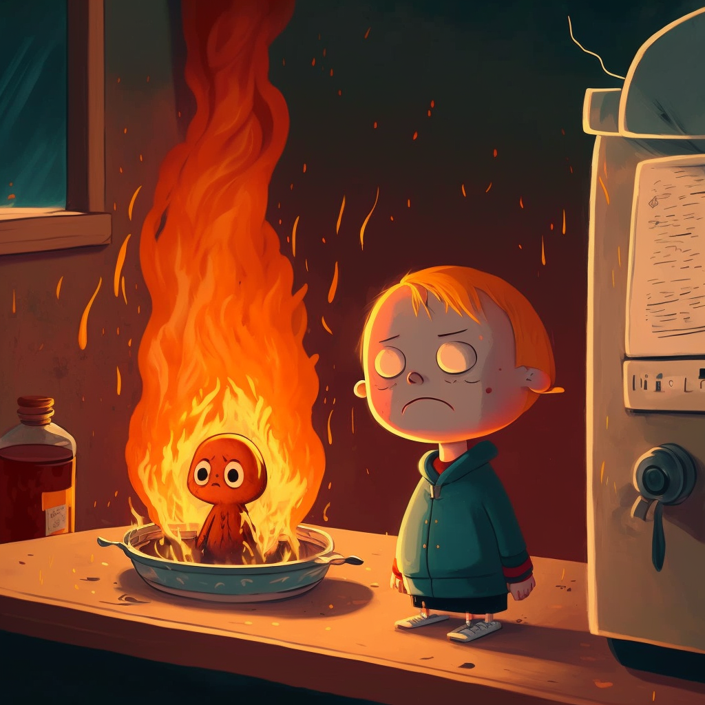
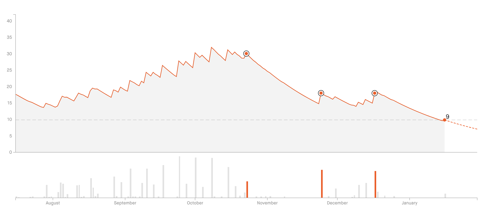
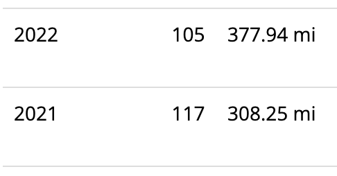

There’s going to be language in this post. Consider skipping if you prefer your blog posts merely warmed and with cream; this one is straight out of the pourover.
2022 was a fucking shitshow.
Forget the transition out of academia that fell flat on its fucking face in the final mile1. Forget the actual running that went from runway to runway, gunning the engine and building some speed on occasion but without ever quite taking off. Forget 2022’s parting shot of giving our entirely family COVID within days of the year’s end (save our daughter, miraculously and thankfully) when we’ve been so diligent for three fucking years. Forget that we’ve been pretty much the only ones still wearing masks on planes and at our daughter’s daycare, as if “I’ve decided to get on with my life” somehow makes the pandemic over simply by willing it; as if it’s impossible to “get on with life” while also taking basic fucking precautions that hurt no one and help everyone.
All of that was rage-inducing beyond words and each deserve their own posts to really break down. But the real story of my 2022 was of burnout that I foolishly thought I could outrun.
Burnout dances to its own tune
I’ve been burned out for quite awhile now; realistically, there are likely roots going all the way back to graduate school, but things really kicked into gear with the tenure-track position and the stress it brought.
The pandemic didn’t create anything new in this regard, but it did act as a force multiplier, frying what little bandwidth I had left and forcing me to confront just how toxic my working circumstances were.
This was all complicated by the birth of my daughter, happening at the same time as my promotion and tenure process, wrapped up in some of the most gratuitous displays of academia’s utter disdain both for growing families and, it turns out, straightforward public health guidelines around pandemic mitigation strategies.
Suffice to say, when I landed a job at Quansight in mid-late 2021, I jumped at the possibility of an exit strategy. Admittedly, I jumped way, way too soon: I was worried of losing the opportunity if I waited (irony), I didn’t have anything approximating a concrete exit strategy from academia (haste), and I thought I could hold down two positions long enough to gracefully exit (fucking LOL).
Writing on the wall
Even when I formalized a sabbatical beginning August 2022–an entire eight months after I started working full-time at Quansight–I was so far beyond any kind of discernible burnout threshold that it’s a miracle I lasted another three months before leaving.
Through all of 2022, my burnout was so severe that entire consecutive weeks would go by where I napped daily just to make it through the day. I was besieged by migraine headaches at the base of my neck that radiated down my legs; they wouldn’t respond to ibuprofen, and made literally any activity impossible. By the fall, I was having these migraines 3-4 days a week. But the coup de gr\(\hat{a}\)ce, the real cherry on top of it all was how, on a given work week in 2022, my upper bound for productivity was probably about 25% efficiency.
Yes, I typed that correctly: on a given 40-hour work week, I at my peak could probably crank out about 10 hours of real, actual work. Most of the time, I was operating at some sigma less than that. I’ll take my promotion now.
The weirdest thing about this level of burnout probably answers the obvious burning question following that previous revelation: I had no idea this was all related, or that there was even really a problem. The headaches were annoying, the naps made things bearable (in a sense), and surely I was just still getting the hang of things and I’d soon start churning out productive weeks? After all, I just had to hold out until I could sever all ties to academia in… 6-8 more months.
About that.

To address the (one of many, I suspect) elephant in the room: wasn’t I on sabbatical from my academic role? Yes, dear reader, I was. And it was still requiring at least a handful of hours from me, on a good week. Some sabbatical.
Oh yeah, October. Our entire family got RSV in the second half of October. Didn’t I mention that earlier? No? Yeah, that was an entire week where all three of us were sick (so no daycare for kiddo), followed by a second week where my daughter and I developed secondary bacterial infections! Great for the aforementioned productivity!
No options given
If there’s anything positive to be said about burnout, it’s this: eventually, it gives you no choice. You reach a point where it’s physically, mentally, emotionally, spiritually, ecumenically, and grammatically impossible to keep moving forward.
Without going into detail2, that point came just before Thanksgiving. I left Quansight. I took the entire month of December off. And hooooooly shit y’all, but that month was, honest-to-goodness, maybe the first time in over a year I not only stopped digging the burnout hole deeper, but actually started filling it back in. I can’t describe the feeling of my brain lighting up and making connections and actually functioning–I spun up our household Mastodon instance in that time3! I actually recovered a bit, holy fuck.
And only then did I slowly begin to realize how absolutely fucked I’d been the entire year up until that point. How the fuck did I expect to be able to continue down this road for another six to eight MONTHS?
It seems ridiculous–laughable, if it didn’t border so close to outright dangerous–but only in hindsight.
Light even in darkness
My 2022 was defined by my burnout… but also by my realization of its full extent. And, in doing so, by the start of me turning things around.
Beyond burnout, there were some other events and accomplishments in 2022 that were cause for celebration by themselves.
My wife quit the job that was stifling her and is now pursuing her dreams as a full-time fiction writer. This was one of the very first things I learned about her all those years ago when we met4, and the fact that she’s living it now–and all the challenges and anxieties and freedoms and blessings it comes with–makes me prouder than I’ve been of anyone in years.
Speaking of my wife and her writing, she finished a complete draft of the book she’s been working on for the past bit. I finished reading it a week or so ago, and I fucking love it. I may be a little biased, but I also read 30 books last year according to my StoryGraph5, so I have at least an inkling of what I’m talking about. She’s an amazing writer; you should buy it when it’s published!
My daughter is rapidly turning into the most fiery and powerful person I could have ever hoped she would be. It’s exhausting and enthralling and I’m so freaking happy to be her dad.
We did, in fact, solve some of the flooding problems around our house6. We had extensive work done on the back and front yards, and I can proudly say that our front yard is virtually problem-free and our backyard is… better. Obviously there’s more to be done, but in exchange for a lot of money there was a good amount of progress toward eliminating the literal rivers that swirl around our house during a downpour.
For all my breathless pearl-clutching around my running failures, 2022 was, by any reasonable measure, an improvement over 2021, and those improvements should be celebrated… even if they aren’t the impossible gains I wanted.
Strava has a fitness estimate tracker; it’s obscenely biased in ways I can’t begin to wrap my head around, but it seems like a moderate-to-low variance estimator, so it provides a decent relative intuition on fitness over time. And I have to say: given my 2022, it’s halfway ok.

Speaking of running, my total mileage improved year-over-year. I also ran my first half marathon since before COVID7. It was the slowest half I’ve ever run (by a lot), but I finished. I also ran a handful of other races last year, which helped remind me that racing is a lot of fun–which helped remind me that running is a lot of fun.

I spun up an entire Mastodon instance, Casa Quinnwitz, on my homelab Raspberry Pi cluster (shout-out to the Mastodon dev team, which is full of super kind and patient folks). It’s pretty much my new socialz home, since Twitter has been rendered all-but-unusable with Tweetbot and all the other third-party clients going belly-up. I kind of love the vibe there; feels very longer-form-proto-Twitter with a pre-Eternal September thing going.
What’s next?
I’m back in the academy this semester, teaching my data science practicum course while guiding a half dozen of my remaining students to graduation in May. I have a weekly structure in place that balances my obligations to the academy with my needs for continuing rest, exercise, and my own fun shit. I’m still feeling the after-effects of COVID but am hoping that will taper off as I get back into running again, training for a half marathon in April and multiple shorter races before then. I have a concrete exit strategy from academy, and a timeline of events and milestones to accompany it.
Crucially, I’ve also adopted a new strategy for handling work-related items coming my way: NO.
No, I’m not taking new students.
No, I can’t review for your conference/study section/journal.
No, I’m not open to new research collaborations.
No, I can’t sit on your [insert topic here] panel9.
No, I’m not going to be on that committee.
No no no no no. No.
It’s a really hard fucking thing for a lifetime people-pleaser to set up boundaries, but for me in this moment, it’s both a matter of mere survival as well as a pathway to doing what I really love.
Here’s to a 2023 of healing. Much love to all of you 🥂
Footnotes
Yes, there will be a future blog post on this. No, I’m not going to expound any further on it here.↩︎
Ask if you really want to know.↩︎
Don’t worry, I have an entire series of blog posts (six, I think?) planned to go over it in gross detail. Stay tuned!↩︎
Just about 17 years ago! 😱 ↩︎
Ditch Goodreads!↩︎
This one’s for you, Mom and Dad 🎄✉️ ↩︎
The last half I ran was late 2019, almost a 3-year gap!↩︎
Now I’m just fucking with you. Also I love footnotes, so expect to see a lot of them on every blog post.↩︎
Though I did get invited to one on ChatGPT, and wow the temptation to say “yes” and then just burn the whole place down is overpowering… I’ll have to think about it.↩︎
Citation
@online{quinn2023,
author = {Quinn, Shannon},
title = {2022: {A} Year in Review},
date = {2023-01-17},
url = {https://magsol.github.io/posts/2023-01-14-year-that-almost-was/},
langid = {en}
}